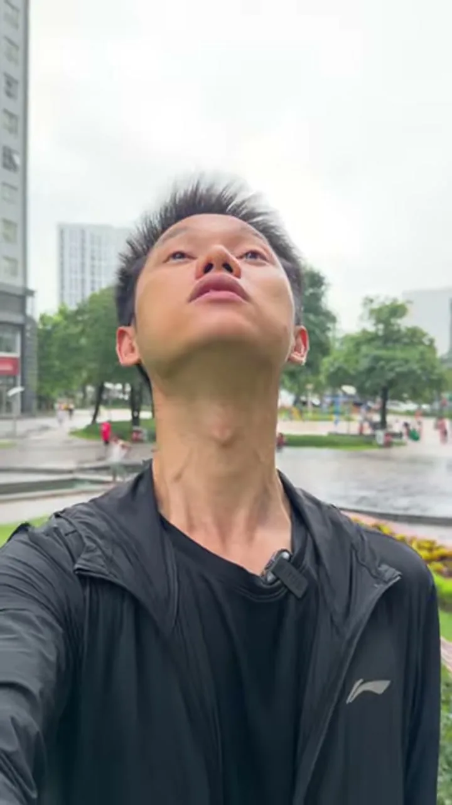

Cắt ngay khi cánh cửa đang bật mở

• Cảnh 1 (Ngoài tủ): Tay nắm lấy cánh cửa tủ lạnh và bắt đầu kéo ra.
• Điểm cắt: Cắt ngay khi cánh cửa đang mở lưng chừng.
• Cảnh 2 (Từ trong tủ nhìn ra): Cánh cửa tiếp tục mở nốt và tay vươn vào lấy lon nước.
Cắt ngay khi đáy ly đang hạ xuống mặt bàn

• Cảnh 1 (Góc Trung): Tay cầm ly cà phê đang hạ từ trên xuống mặt bàn.
• Điểm cắt: Cắt khi đáy ly còn cách mặt bàn khoảng 2–3 cm.
• Cảnh 2 (Góc Cận): Đáy ly vừa đặt xuống mặt bàn kèm tiếng “cạch” giòn tan.
Cắt ngay khi bìa sổ đang lật hoặc bàn chân đang hạ xuống

• Ba nhóm chuyển động dễ khớp nhất cho người mới: (1) Bàn tay cầm/đặt đồ vật, (2) Vật thể đang bay/lật mở, (3) Bước chân đi qua cửa.
• Nguyên tắc: Luôn quay trọn vẹn động tác ở cả 2 góc máy để lúc dựng có dư đầu-đuôi mà cắt nối.
“Đây là nền móng đầu tiên: Cắt ở lúc hành động đang diễn ra. Hai loại sau đều đứng trên nguyên lý này. Từ chuyện mở tủ lạnh, đặt ly cà phê cho tới mở cuốn sổ trên bàn làm việc: cứ cắt ngay lúc bàn tay đang di chuyển, đừng bao giờ đợi tay dừng hẳn rồi mới cắt.”


“Mình bấm mở từng mẫu ngay trên màn hình, dừng lại đúng ở vết cắt và hỏi cả lớp: Tay của nhân vật lúc này đang đứng yên hay đang chạy? Tất cả đều cắt ngay khi cánh cửa đang mở, dòng cà phê đang chảy hoặc bàn chân đang hạ xuống đất.”
Lia máy ngang (Trái / Phải)
Đang nói thì lia nhanh điện thoại sang phải tạo vệt mờ; đầu Cảnh 2 lia từ trái vào mặt nhân vật.
Lia máy dọc (Lên / Xuống)
Hất nhanh điện thoại từ dưới lên trời (hoặc chúc xuống đất) ở cuối Cảnh 1 và nối cùng hướng ở Cảnh 2.
Lắc xoay cổ tay
Lắc nghiêng cổ tay cầm điện thoại sang trái một nhịp nhanh rồi lắc trả lại ở khung hình kế tiếp.
Che kín ống kính
Đưa lòng bàn tay, vạt áo hoặc đạo cụ che kín 100% mắt camera ở cuối Cảnh 1 rồi mở ra ở Cảnh 2.





“Sau cái đầu chính là chiếc điện thoại trên tay bạn. Lưu ý hai lỗi người mới hay mắc: Một là lia máy quá chậm nên thấy rõ cảnh ở giữa; phải lia nhanh một mạch cho mờ hình. Hai là đưa tay che ống kính nhưng che không kín, còn hở ánh sáng ở viền; hãy áp sát lòng bàn tay hoặc đạo cụ che kín 100% mắt camera rồi mới mở ra ở cảnh sau.”
Bắt buộc Đổi Cỡ Cảnh
Cảnh trước đang là cỡ Trung thì cảnh sau phải đổi sang cỡ Rộng/Toàn hoặc cỡ Cận. Không nối 2 cảnh cùng cỡ.
Bắt buộc Đổi Góc Máy
Kết hợp đổi cỡ cảnh với đổi góc: Ngang tầm mắt → Thấp hất lên → Cao nhìn xuống → Góc chéo.
Đổi Hướng Lệch > 30°
Dời chân máy theo cung tròn quanh chủ thể lệch ít nhất hơn 30 độ so với trục máy ban đầu.


“Khi có chân máy, mỗi lần đổi cảnh bạn bắt buộc đổi 3 thứ: Một là đổi cỡ cảnh (Trung sang Toàn hoặc Cận). Hai là đổi góc máy (Ngang sang Thấp hoặc Cao). Ba là đổi hướng máy lệch ít nhất hơn 30 độ. Dưới 30 độ mắt người xem thấy hai cảnh quá giống nhau nên báo lỗi giật hình; trên 30 độ mắt công nhận ngay đây là góc nhìn mới.”
KHÓA TÂM
HÀNH ĐỘNG
| Vị trí hành động cuối Cảnh A | Vị trí hành động đầu Cảnh B | Mắt người xem phản ứng thế nào? | Kết quả thị giác |
|---|---|---|---|
| ❌ Bàn tay nằm ở góc trái | ❌ Bàn tay nhảy sang góc phải | Con ngươi phải phóng ngang màn hình để tìm lại bàn tay. | Khựng thị giác! (Dù đã cắt 70/30 và lệch >30°) |
| ✅ Bàn tay khóa ở Ô Giữa | ✅ Bàn tay khóa ở Ô Giữa | Mắt đứng nguyên một chỗ, chỉ thấy bối cảnh xung quanh biến đổi. | Vết cắt tàng hình 100%! |


“Tại sao nhiều bạn cắt đúng lúc tay đang chạy, đổi góc hơn 30 độ rồi mà nhìn vẫn thấy khựng? Vì ở cuối cảnh 1 cái tay nằm bên trái, sang đầu cảnh 2 cái tay nhảy sang bên phải! Con ngươi người xem phải bay đi tìm cái tay nên thấy giật. Cả lớp mở ngay cài đặt Camera bật Lưới 9 ô lên, đặt vật chính vào đúng ô giữa trước mỗi cú máy.”